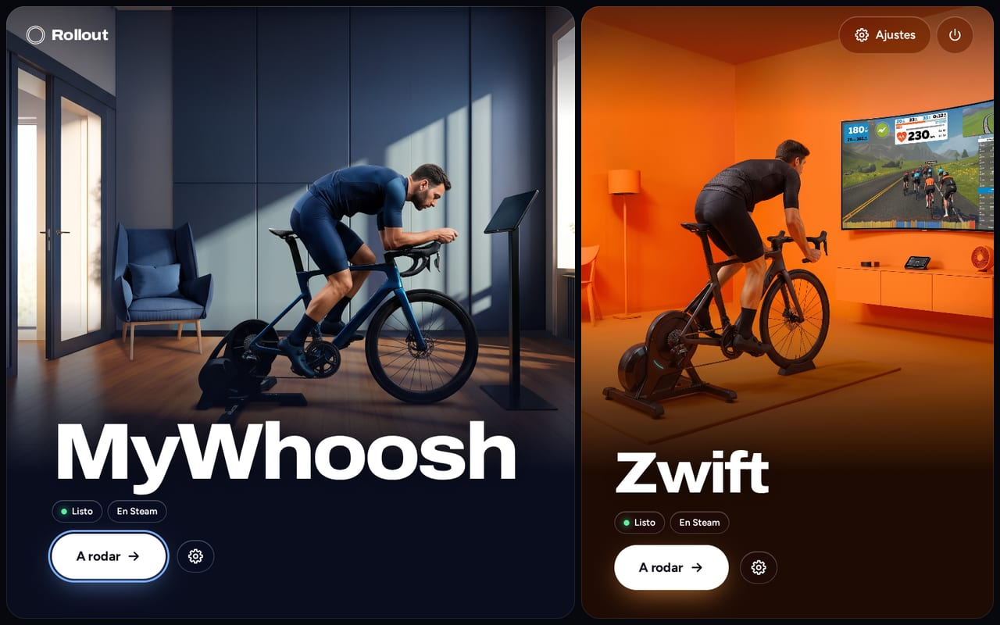
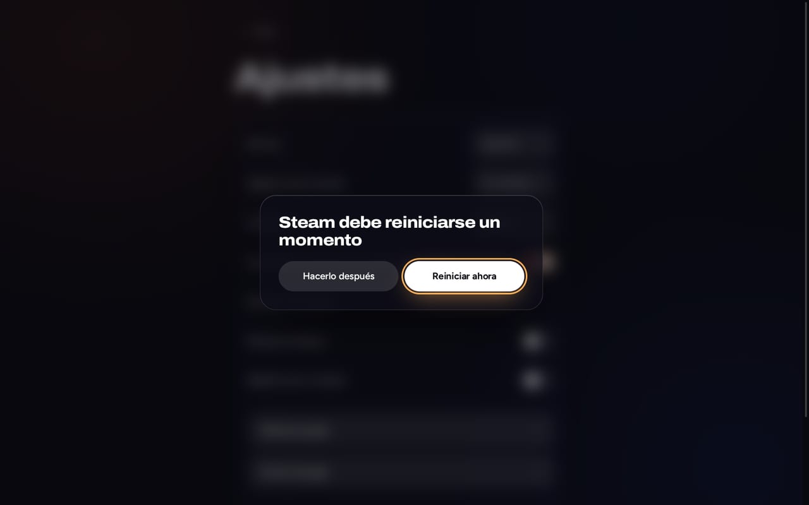

MyWhoosh
Bluetooth directo- Rodillo y banda de pulso por Bluetooth, emparejados en el juego como en Windows
- Funciona con GE-Proton, descargado y comprobado para ti
Rollout instala, actualiza e inicia tus apps de ciclismo indoor. Descarga, doble clic y a rodar, todo con el mando.
Beta: probado en ROG Ally con Bazzite. Steam Deck aún sin comprobar.

Cada app recibe la configuración que mejor funciona en Linux. Rollout la elige por ti.
Cada pantalla funciona con mando, táctil y teclado. Los menús y las listas son propios de Rollout, así que funcionan en el Modo Juego, donde los menús nativos fallan.
Sin preguntas obligatorias, sin terminal, sin sudo. Rollout muestra el tamaño y el tiempo por adelantado y luego fases claras con progreso.
Rollout puede actualizarse solo en segundo plano. Cada actualización del launcher está firmada y se prueba al arrancar; si falla, Rollout vuelve solo a la última versión buena.
Un interruptor añade Rollout y tus apps a Steam, con imágenes. Empieza a rodar directamente desde el Modo Juego; el tiempo de juego se conserva en las actualizaciones.

En MyWhoosh, la comprobación de Bluetooth muestra qué rodillos y bandas de pulso emiten antes de clipar, y reinicia un adaptador bloqueado.
Cuando algo sale mal, Rollout dice con palabras sencillas qué hacer después, con un botón para volver a intentarlo. Los detalles, solo si los quieres.
Tras «Avanzado»: versión de Proton, salida gráfica, adaptador Bluetooth, canal de actualizaciones, registros y diagnóstico. Cada opción muestra el valor recomendado.
Elige tu sistema, descarga Rollout y ábrelo en el Modo Escritorio. No hace falta terminal.
Beta: probado en ROG Ally con Bazzite. Steam Deck aún sin comprobar.
La descarga estará disponible pronto.
Zwift necesita además Podman o Docker, que SteamOS normalmente no incluye. MyWhoosh no necesita ninguno.
La descarga estará disponible pronto.
Podman viene incluido, y Zwift lo necesita. Bazzite con GNOME: los archivos .desktop descargados no se inician con doble clic allí, así que esta instalación aún no funciona en esa edición. Usa la edición con KDE.
Otras distribuciones de Linux: sin soporte, bajo tu propia responsabilidad. Consulta GitHub.
Rollout no modifica los juegos. Maneja proyectos abiertos que ya hacen el trabajo duro.
Los scripts de los proyectos están fijados a un commit exacto y se comprueban con SHA-256. Las actualizaciones del launcher se firman con Ed25519.
Rollout vive en ~/.local/share/rollout. Instalarlo no requiere root ni cambia paquetes del sistema en SteamOS o Bazzite.
Zwift no tiene Bluetooth directo en su contenedor, y ninguno de los dos juegos tiene soporte oficial en Linux. Rollout lo dice en lugar de ocultarlo.
En Bazzite sí: Zwift funciona en un contenedor basado en netbrain/zwift, que Rollout instala e inicia. Rollout está probado en un ROG Ally con Bazzite; Steam Deck aún no se ha comprobado. En SteamOS normalmente falta antes Podman o Docker. Los sensores se conectan mediante Zwift Companion en el móvil o Direct Connect, no directamente por Bluetooth.
Sí. MyWhoosh funciona con GE-Proton y habla directamente por Bluetooth con tu rodillo y tu banda de pulso. Los emparejas en el juego, como en Windows.
Sí, con Bazzite. Instala Rollout en el Modo Escritorio y luego inicia Zwift desde Rollout o desde Steam en el Modo Juego. Tu mando controla el juego.
No. Descarga Rollout.desktop, haz doble clic en el Modo Escritorio y confirma una vez. Después Rollout aparece en tu menú de aplicaciones.
Sí. Rollout funciona con mando, táctil y teclado. En el Modo Juego, tu mando también controla Zwift.
Rollout busca versiones nuevas en segundo plano y las instala automáticamente si quieres. Las actualizaciones del launcher están firmadas, y una actualización defectuosa se deshace sola.
No. Rollout es un proyecto independiente y no está vinculado a Zwift, Inc., MyWhoosh ni Valve. Sus condiciones restringen las herramientas de terceros no autorizadas, y pueden suspender cuentas a su criterio. Lee las condiciones y decide por ti mismo.
Rollout está en beta. Está probado en un ROG Ally con Bazzite. SteamOS en la Steam Deck es el segundo objetivo, pero aún no se ha comprobado. Otras distribuciones de Linux, bajo tu propia responsabilidad.